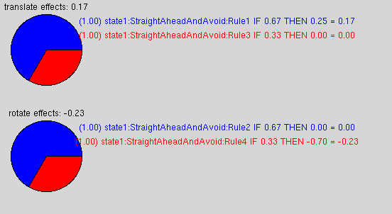

|
|||||||
| [ Home ] | [ Software ] | [ Curriculum ] | [ Hardware ] | [ Community ] | [ News ] | [ Publications ] | [ Search ] |
|
This is an introduction to the idea of combining reactive and sequential control. This module explores two such methods: fuzzy logic and subsumption. When completed, the reader should be ready to design and created complex, real world robot controllers.
PyroModuleBehaviorBasedControlThis Pyro module will explore the behavior-based paradigm of designing robot controllers. A "behavior" is a block of control code that is responsible for a particular kind of situation or movement. Behavior-based control is a "bottom up" paradigm rather than a "top down" one. Top down control is a centralized algorithm that determines how to move a robot. In bottom up control schemes, the actual movement is determined via an interaction between these behaviors. There are two main variations of behavior-based strategies: "vertical" and "horizontal" behavior-based control systems. This distinction should become clear in the following sections.
Vertical BehaviorsThe first example of behavior-based control that we will examine is the subsumption architecture. To understand this architecture imagine that we have a collection of small behaviors each designed for a particular situation. Consider:
class Wander(SubsumptionBehavior):
def update(self):
self.move( .2, random.random() * 2 - 1)
class Avoid(SubsumptionBehavior):
def update(self):
if min([s.value for s in self.robot.range["front-all"]]) < 1:
self.move( -.2, 0)
Each of these little nuggets contain a call to move() with a desired translation and rotation amount. For example, the Avoid behavior says that if there is an obstacle within 1 unit in the front of the robot, then it should move slowly backwards (-2). Likewise, Wander says to move slowly forward, and turn the wheels a random amount between hard left (1) and hard right (-1). Notice that Wander doesn't have any conditionals; it just wanders. On the other hand, Avoid only issues a move statement when the conditional is true, and doesn't even have an ELSE statement. Now, the question remains as to how to integrate these behaviors together. In the subsumption architecture paradigm, only one behavior will have control at any one moment. We need only give priority to one behavior over another. Low priority behaviors will have control if there is nothing pressing to take care of immediately. However, if a higher level behavior's conditional is triggered, then it will take control. For example, in the above example, Wander would have lowest priority, and Avoid would have higher. Avoid would only "kick in" when something gets close to the front of the robot. We can then create a stack of behaviors, those with highest priority on top, thus the term vertical behavior-based robotics. To build a simple subsumption engine in Python is quite straightforward. We can extend the pyrobot.brain base class to give us the basics. All that is required is to define a update() method that executes one execution cycle of the algorithm. Here is a simple version of the algorithm:
Here is a skeleton of a step method to implement the above pseudocode:
class SubsumptionBrain(Brain):
...
def step(self):
b = self.updateAll()
self.move(self.behaviors[b].translate,
self.behaviors[b].rotate)
def updateAll(self):
for b in range(len(self.behaviors) - 1, 0, -1):
self.behaviors[b].update()
if self.behaviors[b].flag:
return b
# if none fired, return lowest:
self.behaviors[0].update()
return 0
We then need only flesh out the SubsumptionBehavior class and fill in a few details:
class SubsumptionBehavior:
def move(self, translate, rotate):
self.translate = translate
self.rotate = rotate
self.flag = 1
Notice that the move method of each behavior doesn't actually move the robot. Rather, it saves the desired movement and sets flag to true. In this manner each behavior can be running on its own timescale, but we can centralize the actual call to make the robot move. This makes the programming a bit easier later on. For example, if we allow two behaviors to have the same priority we need to have a further mechanism to arbitrate the tie. In this simple example however, we will have a priority stack without the possibility of ties. Now we add the behaviors to the brain, lowest priority behaviors first:
def INIT(engine):
subsumption = SubsumptionBrain( engine )
# add behaviors, lowest priorities first:
subsumption.add( Wander() )
subsumption.add( Avoid() )
return subsumption
Recall that INIT is a special method in Pyro loadable object files (like brains, simulators, and robots) that will return a brain when passed an engine. Putting it all together:
# A Subsumption Behavior-based Brain
# Subsumption.py
from pyrobot.brain import Brain
import time
import random
class SubsumptionBehavior:
def __init__(self):
self.translate = 0
self.rotate = 0
self.flag = 0
def setRobot(self, robot):
self.robot = robot
def move(self, translate, rotate):
self.translate = translate
self.rotate = rotate
self.flag = 1
class SubsumptionBrain(Brain):
def __init__(self, engine):
Brain.__init__(self, 'SubsumptionBrain', engine)
self.behaviors = []
self.robot = engine.robot
def add(self, behavior):
behavior.setRobot( self.robot )
self.behaviors.append( behavior )
def step(self):
b = self.updateAll()
print "%s is in control" % self.behaviors[b].__class__.__name__
self.move(self.behaviors[b].translate,
self.behaviors[b].rotate)
time.sleep(1)
def updateAll(self):
# for all except lowest:
for b in range(len(self.behaviors) - 1, 0, -1):
self.behaviors[b].flag = 0
self.behaviors[b].update()
# if it fired, return number:
if self.behaviors[b].flag:
return b
# if none fired, return lowest:
self.behaviors[0].update()
return 0
# -----------------------------------------------------
class Wander(SubsumptionBehavior):
def update(self):
self.move( .2, random.random() * 2 - 1)
class Avoid(SubsumptionBehavior):
def update(self):
if min([s.value for s in self.robot.range["front-all"]]) < 1:
self.move( -.2, 0)
def INIT(engine):
subsumption = SubsumptionBrain( engine )
# add behaviors, lowest priorities first:
subsumption.add( Wander() )
subsumption.add( Avoid() )
return subsumption
[
Behavior-based controllers are typically purely reactive. That is, they have no memory and merely react to the immediate environment. In the next section we will examine a method of also adding "state" (and therefore memory) to the behavior-based paradigm.
Exercise #1Create a subsumption-based controller with a minimum of 4 behaviors. Create a behavior that will wander, avoid obstacles, and follow a wall.
Horizontal BehaviorsIn this version of behavior-based robotics, multiple behaviors may be active at once. This requires some idea of behavior "blending." In this manner, behaviors are not in a vertical stack based on priorities, but all on the same level, thus the horizontal name. These types of brains are made up of states, and each state is composed of a set of behaviors. States are like states in an FSM. You can "goto" one state from another, thereby switching the set of active behaviors. Behaviors can affect multiple controllers. For example, a set of behaviors could affect 'rotate' and 'translate'. Let's take a look at the skeleton of a behavior-based brain.
1 # A Behavior-based brain
2
3 from pyrobot.brain.fuzzy import *
4 from pyrobot.brain.behaviors import *
5
6 class StraightAheadAndAvoid(Behavior):
7 def update(self):
8 self.IF([Nothing blocking], 'translate', 0.25)
9 self.IF([Nothing blocking], 'rotate', 0.0)
10 self.IF([Something is blocking], 'translate', 0.0)
11 self.IF([Something is blocking], 'rotate', [Turn Away])
12
13 class state1 (State):
14 def setup(self):
15 self.add(StraightAheadAndAvoid(1, {'translate': 1.0, 'rotate': 1.0}))
16
17 def INIT(engine):
18 brain = BehaviorBasedBrain({'translate' : engine.robot.translate, \
19 'rotate' : engine.robot.rotate, \
20 'update' : engine.robot.update }, engine)
21 brain.add(state1(1))
22 return brain
Figure 1: A basic behavior-based brain. This brain, as its name suggests, tries to go straight when it can, and will steer clear of obstacles when it must. Lines 8 - 11 define this behavior in terms of 4 rules. In lines 18-20 we see that the constructor of the BehaviorBasedBrain class takes a dictionary of named controllers and their associated functions to access them. In this example, we have passed in 'translate', 'rotate', and 'update'. 'update' is needed so that the brain knows what to call to update the sensor readings. 'rotate' and 'translate' are arbitrary names for the particular controllers we want this brain to control. It could control many other effectors, such as the camera's pan-tilt-zoom for example. This brain has exactly one state called 'state1'. state1 contains one behavior, StraightAheadAndAvoid. state1 is added to the brain in line 21, and the behavior is added to the state in line 15. Notice that when adding a state to a brain, or a behavior to a state that we can pass a value indicating whether the state/behavior is initially active. In addition, when adding a behavior to a state you can provide a dictionary of effects. We will discuss that below. These effects are only meaningful when you have multiple behaviors. StraightAheadAndAvoid attempts to move the robot away from obstacles and attempts to move the robot straight forward at a steady speed (0.25). As mentioned, these "desires" are expressed using these rules:
8 self.IF([Nothing blocking], 'translate', 0.25) 9 self.IF([Nothing blocking], 'rotate', 0.0) 10 self.IF([Something is blocking], 'translate', 0.0) 11 self.IF([Something is blocking], 'rotate', [Turn Away]) These can be read as:
8 "if nothing is blocking the robot, then go ahead (translate) at 0.25." 9 "if nothing is blocking the robot then don't rotate." 10 "if something is blocking the robot, then go ahead (translate) at 0.0." 11 "if something is blocking the robot then set rotate to the value [Turn Away]." The IF method takes three arguments: a value of truth, the name of a controller, and an amount to adjust the controller. A behavior can have any number of IF rules for any of the named controllers. All of the active behaviors (there can be more than one) run through their IF rules and add up all of the truth values for each of the controllers. Part of the power of this paradigm is that the truth on each rule can be partially true, and multiple rules can "fire". To examine exactly how such a brain can control a robot, let's go through an example with specific values. Consider [Something is blocking] is only partially true (say 0.2 true). Also, let's say that that [Nothing blocking] is, say, 0.4 true. (One might think that the concepts "blocking" and "not blocking" should be symmetric, but that doesn't have to be.) First, we total the amount of truth for each controller. In our example:
Therefore, both controllers truth's sum to 0.6. To compute how much each rule contributes, we multiply the controller value by the weighted value of the truth of the rule. For example:
If we assume that [Turn Away] has a value of -0.7, we then sum up the weighted control values for each controller:
Finally, these values are weighted by the active states' designated effect (there can be more than one state active). In this case there is only one state active and so we don't need to weight this set of behaviors with others. These computed values become the values sent to the controllers. Let's see if Pyro gives these values for a simple behavior-based brain:
# A Behavior-based brain
from pyrobot.brain.fuzzy import *
from pyrobot.brain.behaviors import *
class StraightAheadAndAvoid(Behavior):
def update(self):
self.IF(0.4, 'translate', 0.25)
self.IF(0.4, 'rotate', 0.0)
self.IF(0.2, 'translate', 0.0)
self.IF(0.2, 'rotate', -0.7)
class state1 (State):
def setup(self):
self.add(StraightAheadAndAvoid(1, {'translate': 1.0, 'rotate': 1.0}))
def INIT(engine):
brain = BehaviorBasedBrain({'translate' : engine.robot.translate, \
'rotate' : engine.robot.rotate, \
'update' : engine.robot.update }, engine)
brain.add(state1(1))
return brain
Run this brain on any robot of your choice and observe its behavior. To help visualize what rules are firing, and by how much, click on the View button (or go to Brain > Watch, depending on your version). You should see a window similar to the following: 
Notice that for each rule that fires there is a line in the display. Each rule is indicated by the name of the state:name of the behavior:rule name/number. The actual value sent to each controller is in black above the pie chart. As can be seen, the computed values match our calculation above (-0.23 and 0.17). The (1.0) at the beginning of every line indicates the relative effect that each rule had. This value will change if you have multiple behaviors with differing effects.
Behavior OptionsThe horizontal behavior-based brain behaviors have the following methods:
Also, another State method (other than those already discussed in the previous section on Finite State Machine) is needed to add behaviors to the state:
Another ExampleBefore actually designing a brain that does something useful, let's explore another variation in creating behavior based brains. In this variation, let's consider the same rules from above, but split into two different behaviors:
1 # A Behavior-based brain
2
3 from pyrobot.brain.fuzzy import *
4 from pyrobot.brain.behaviors import *
5
6 class StraightAhead(Behavior):
7 def update(self):
8 self.IF([Nothing blocking], 'translate', 0.25)
9 self.IF([Nothing blocking], 'rotate', 0.0)
10
11 class Avoid(Behavior):
12 def update(self):
13 self.IF([Something is blocking], 'translate', 0.0)
14 self.IF([Something is blocking], 'rotate', [Turn Away])
15
16 class state1 (State):
17 def setup(self):
18 self.add(StraightAhead(1, {'translate': 0.3, 'rotate': 0.3}))
19 self.add(Avoid( 1, {'translate': 0.3, 'rotate': 0.3}))
20
21 def INIT(engine):
22 brain = BehaviorBasedBrain({'translate' : engine.robot.translate, \
23 'rotate' : engine.robot.rotate, \
24 'update' : engine.robot.update }, engine)
25 brain.add(state1(1))
26 return brain
Figure 2: A basic behavior-based brain with 2 behaviors. In this version, we have divided the rules dealing with obstacles into a behavior named Avoid, and the ones that deal with going straight into a behavior named StraightAhead. At this point we should make note of line 18 and 19. As before, we add behaviors with the add() method which takes two arguments: whether the behavior is active or not, and a dictionary of controllers that this behavior may effect. Associated with each controller is an effect weighting. This is a value relative to other behavior's effects. In this example, we let the Avoid behavior affect the translate and rotate controllers exactly as much as the StraightAhead behavior (both at arbitrary values 0.3). Filling in values as before gives:
# A Behavior-based brain
from pyrobot.brain.fuzzy import *
from pyrobot.brain.behaviors import *
class StraightAhead(Behavior):
def update(self):
self.IF(0.4, 'translate', 0.25)
self.IF(0.4, 'rotate', 0.0)
class Avoid(Behavior):
def update(self):
self.IF(0.2, 'translate', 0.0)
self.IF(0.2, 'rotate', -0.7)
class state1 (State):
def setup(self):
self.add(StraightAhead(1, {'translate': 0.3, 'rotate': 0.3}))
self.add(Avoid(1, {'translate': 0.3, 'rotate': 0.3}))
def INIT(engine):
brain = BehaviorBasedBrain({'translate' : engine.robot.translate, \
'rotate' : engine.robot.rotate, \
'update' : engine.robot.update }, engine)
brain.add(state1(1))
return brain
This should give exactly the same behavior as before. Now, let's change the effect of one of the behaviors. Change the Avoid behavior so that its effects on both controllers are double that of StraightAhead. You should get values similar to the following:
Now, let's explore fuzzy logic.
IF and Fuzzy LogicAs you have seen, the behavior brain class contains a method named IF. It has the following form:
self.IF( FUZZYVALUE, CONTROL, AMOUNT [, NAME])
where FUZZYVALUE is a floating point value between 0 and 1. CONTROL is any controller name, amount is the amount you wish to set the controller to, and NAME is an optional name for the rule. NAME is useful for debugging as the name will show up in the brain view. An example:
self.IF( .4, 'translate', .8, 'Rule1')
This is read: "This rule (named Rule1) is only somewhat true (0.4 out of 1.0) so I don't want to go forward nearly as much as I would if this were more true." Often, you want to compute the FUZZYVALUE based on some criteria, for example, how close you are to a wall. For this you can use a FuzzyClassifier and apply the classifier to a variable or set of variables. A FuzzyClassifier contains a membership function which maps values to a floating-point value between zero and one. There are a number of built-in types of FuzzyClassifiers; you can either use one of these and specify its parameters, or you can build your own. You can create a simple fuzzy classifier using the following code:
import pyrobot.brain.fuzzy fuzvariable = RisingFuzzy(SMALLVALUE, BIGGERVALUE) That creates a FuzzyClassifier with a linear, rising membership function. To fuzzify a value, call the FuzzyClassifier like this:
fuzvariable(VALUE) This returns a FuzzyValue between 0 and 1. RisingFuzzy's membership function looks like this:
F |
1| * * *
u | *
| *
z | *
| *
z | *
| *
y | *
---*-*-|-------------|---------
a b
Var
and
FallingFuzzy(a,b)(Var) will result in this truth-graph:
F |
1|* * *
u | *
| *
z | *
| *
z | *
| *
y | *
-------|---------------|-*-*---
a b
Var
Now, consider the following statement from a behavior based brain:
self.IF(FallingFuzzy(SMALLVALUE, BIGGERVALUE)(VALUE), 'translate', 0) The IF statement applies to all VALUEs; however, it will only affect translate if it is somewhat true. That is, if FallingFuzzy(SMALLVALUE, BIGGERVALUE)(VALUE) is above zero, then it could affect translate. The more true the fuzzy expression is, the more it will influence translate. Here, "influence translate" means that it will try to stop it. Of course, what actually happens depends on the other behaviors wishes, too. Recall, this is behavior blending. Because this fuzzy expression uses a FallingFuzzy, it becomes more true by having smaller VALUEs. Values that are equal to or less than SMALLVALUE will be 100% true. Values greater than or equal to BIGGERVALUE will be 100% false. Values in-between will have varying degrees of truth.
Fuzzy ConnectivesTo interactively explore Fuzzy values, try:
>>> from pyrobot.brain.fuzzy import * >>> f1 = RisingFuzzy(0, 1)(.5) >>> f1 <pyrobot.brain.fuzzy.FuzzyValue instance at 0x81cc4a4> However, you probably want to see the value. We can see the value by converting it to a float, or by printing it directly (print is overloaded too):
>>> float(f1) 0.5 >>> print f1 <Fuzzy value 0.5> To 'and' and 'or' two fuzzy variables, simply use & and |, respectively:
FallingFuzzy(1, 2)(a) & FallingFuzzy(1, 2)(b) FallingFuzzy(1, 2)(a) | FallingFuzzy(1, 2)(b) Performing an & gives MIN, while | gives MAX (use single ampersand and bar operators):
>>> float(RisingFuzzy(0, 1)(0.25) & FallingFuzzy(0, 1)(0.25)) 0.25 >>> float(RisingFuzzy(0, 1)(0.25) | FallingFuzzy(0, 1)(0.25)) 0.75
Exercise #2Here is a brain that can avoid obstacles:
# A Behavior-based brain
from pyrobot.brain.fuzzy import *
from pyrobot.brain.behaviors import *
from math import pi
class Avoid (Behavior):
def direction(self, dir, dist):
if dist < 1.0:
if dir < 0.0:
return 1.0 - dir
else:
return -1.0 - dir
else:
return 0.0
def update(self):
close_dist, close_angl = min([s.value, s.thr/pi for s in self.robot.range["front"]])
print "Closest distance =", close_dist, "angle =", close_angl
close = FallingFuzzy(0, 1.5)
self.IF(close(close_dist), 'translate', 0.0, "TooClose")
self.IF(~close(close_dist), 'translate', .2, "Ok")
self.IF(close(close_dist), 'rotate', self.direction(close_angl, close_dist), "TooClose")
self.IF(~close(close_dist), 'rotate', 0.0, "Ok")
class state1 (State):
def setup(self):
self.add(Avoid(1, {'translate': .3, 'rotate': .3}))
print "initialized state", self.name
def INIT(engine):
brain = BehaviorBasedBrain({'translate' : engine.robot.translate, \
'rotate' : engine.robot.rotate, \
'update' : engine.robot.update }, engine)
brain.add(state1(1))
return brain
Effects() is used to set the "priority" (or "weight") that a behavior has on a particular control. You can also set the Effect when you add a behavior to a state. For example, if the following three behaviors are added in a state with these commands:
self.add( Avoid(1, {'translate': 1, 'rotate': 1}))
self.add( Wander(1, {'translate': .5, 'rotate': .5}))
self.add( Serve(1, {'translate': .1, 'rotate': .1}))
These lines add three behaviors to the current state: Avoid, Wander, Serve. The 1s indicate that they are all active. All three will contribute to the controllers for translate and rotate. But each one a different amount: Avoid has a weighting of 1/max, Wander has 0.5/max and Serve has 0.1/max. Make this brain work better.
Exercise #3Consider the following brain:
# This example has two states, "edge" that goes straight, and "turn"
# that turns 90 degrees to the left. It bounces back and forth between
# these two states.
# Note how it uses onActivate() to remember where it was when it
# started in both cases. It then moves (forward or to the left) until
# it has moved enough.
from pyrobot.brain.fuzzy import *
from pyrobot.brain.behaviors import *
from pyrobot.geometry import distance
import math
from random import random
class TurnLeftBehavior (Behavior):
def setup(self):
self.Effects('rotate', .1)
self.Effects('translate', .1)
def update(self):
self.IF(1, 'rotate', .1)
self.IF(1, 'translate', 0)
class StraightBehavior (Behavior):
def setup(self): # method called when created
self.Effects('translate', .1)
self.Effects('rotate', .1)
def update(self):
self.IF(1, 'translate', .1)
self.IF(1, 'rotate', 0)
class edge (State):
def setup(self):
self.add(StraightBehavior(1))
def onActivate(self): # method called when activated or gotoed
self.startX = self.robot.x
self.startY = self.robot.y
def update(self):
x = self.robot.x
y = self.robot.y
dist = distance( self.startX, self.startY, x, y)
#print "actual = (%f, %f) start = (%f, %f); dist = %f" \
# % (x, y, self.startX, self.startY, dist)
if dist > 1.0:
self.goto('turn')
class turn (State):
def setup(self):
self.count = 0
self.add(TurnLeftBehavior(1))
def onActivate(self):
self.th = self.robot.th
def update(self):
th = self.robot.th
#print "actual = %f start = %f" % (th, self.th)
if angleAdd(th, - self.th) > 90:
self.goto('edge')
def INIT(engine): # passes in engine, if you need it
brain = BehaviorBasedBrain({'translate' : engine.robot.translate, \
'rotate' : engine.robot.rotate, \
'update' : engine.robot.update }, engine)
# add a few states:
brain.add(edge(1))
brain.add(turn())
#robot.localize(1, 1.5)
return brain
Exercise #4Although all of the examples above use translate and rotate, the BehaviorBasedBrain was designed to control arbitrary controls. For example, you could use the BehaviorBasedBrain to control the pan and tilt of a PTZ unit, like so:
# A Fuzzy Logic PTZ Vision Tracker
# Uses Python-integrated Vision System
from pyrobot.brain.fuzzy import *
from pyrobot.brain.behaviors import *
class BBB(BehaviorBasedBrain):
def destroy(self):
print "robot=", self.robot
self.removeDevice("ptz0")
class Track(Behavior):
def setup(self):
# assumes that a camera device is already running!
# we don't put it here, so that you can load whatever
# type of camera you want: fake, blob, v4l, etc.
self.camera = self.robot.camera[0]
self.camWidth = self.camera.width
self.camHeight = self.camera.height
def update(self):
# match a reddish color:
self.camera.apply("match", 144, 78, 76)
# super color red:
self.camera.apply("superColor", 1, -1, -1, 0, 128)
# blobify all red:
blob = self.camera.apply("blobify", 0, 255, 255, 0, 1, 1, 1)[0]
# returns x1, y1, x2, y2, area
if blob[4] > 200:
cx = (blob[0] + blob[2]) / 2
cy = (blob[1] + blob[3]) / 2
self.IF(Fuzzy(0, self.camWidth ) << cx, 'pan', 5.0, "pan left")
self.IF(Fuzzy(0, self.camWidth ) >> cx, 'pan', -5.0, "pan right")
self.IF(Fuzzy(0, self.camHeight ) << cy, 'tilt',-5.0, "tilt down")
self.IF(Fuzzy(0, self.camHeight ) >> cy, 'tilt', 5.0, "tilt up")
class MyState(State):
def setup(self):
self.add(Track(1, {'pan': 1, 'tilt': 1}))
def INIT(engine):
ptz = engine.robot.startDevice("ptz");
brain = BBB({'pan' : ptz.panRel,
'tilt': ptz.tiltRel,
'update' : engine.robot.update },
engine)
brain.add(MyState(1)) # make it active
return brain
[
Further Reading
| |||||||||||||||||||||||||||||||||||||||||||||||||||||||||||||||||||||||||||
| [ Home ] | [ Software ] | [ Curriculum ] | [ Hardware ] | [ Community ] | [ News ] | [ Publications ] | [ Search ] |
 View Wiki Source | Edit Wiki Source | Mail Webmaster
View Wiki Source | Edit Wiki Source | Mail Webmaster | |||||||